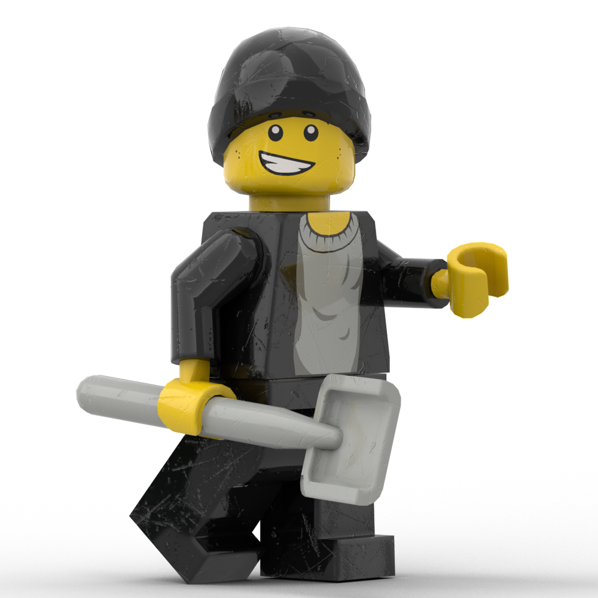

Одна з перших фігурок: Тимофій
Одна з перших фігурок основного складу. Належить до першого покоління. Заснована на першопочатковій аватарці з періоду дистанційного навчання в першому семестрі першого курсу.

Легенди: Андрій Васильович
Одна з фігурок викладачів. Належить до подарункових фігурок першого покоління. Також була однією з найскладніших. Оригінальні файли досі не передані власнику, але це питання наразі розглядається.
Ще трохи бази: Ренат
Ще одна фігурка з основного складу та першого покоління. На думку авторів, є однією з найбільш вдалих.
Знову основний склад: Даша
Також належить до основного складу і першого покоління. Була однією з найскладніших з точки зору волосся і одягу.